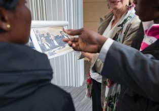
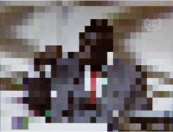

Witnesses
Expert or eye witnesses can be called by the judges, or by the Prosecution, Defence or Legal Representatives of Victims. If a judge orders protection for a witness, this could include voice and face distortion, or conducting the hearing in closed session. The witness may also testify from a different location by remote video link.
Support
ICC staff offer various means of practical support to witnesses, from setting up video link services to witnesses can testify from home, to obtaining visas so they can travel to the seat of the Court in The Hague, the Netherlands.
One particular form of support for witnesses that come to the ICC to testify in Court is the process of “familiarization”, during which ICC staff bring them into the Courtroom before the hearing starts, to allow them to sit in the witness stand for the first time and become familiar with the Courtroom. The staff members explain where the Defence lawyers, Prosecution, and Judges will sit during the hearing. They also test out the computer screens and microphones together with the witness, and answer any questions the witness might have. They do not discuss with them any element of contents of their testimonies.
As part of the Courtroom familiarization process, ICC staff members in the Victims and Witnesses Unit show witnesses photos of the representatives of the parties that will be inside the Courtroom during the hearing © Frank Schinski
Protection
The Court has a number of protective measures that can be granted to witnesses who appear before the Court and other persons at risk on account of testimony given by a witness. The Court’s protection system is founded on best practices which are aimed at concealing a witness’ interaction with the Court from their community and from the general public. These practices are employed by all people coming into contact with witnesses.
Several operational protective measures can be implemented where witnesses reside; for example the Initial Response System is a 24/7 emergency response system that enables the Court, where feasible, to extract witnesses to a safe location should they be targeted or in fear of being targeted. Other operational protective measures include educating witnesses on the importance of confidentiality and cover stories or agreeing on an emergency backup plan.
The Court can also apply procedural protective measures. Such measures may consist of face/voice distortion or the use of a pseudonym. Separate special measures can be ordered by the Court for traumatised witnesses, a child, an elderly person or a victim of sexual violence. These can include facilitating the testimony of witnesses by allowing a psychologist or family member to be present while the witness gives testimony or the use of a curtain to shield the witness from direct eye contact with the accused.
A last resort protective measure is the mechanism through which the witness and his or her close relatives are relocated away from the source of the threat. This is an effective method of protection, but due to the immense burden on the relocated persons, relocation remains a measure of last resort and absolute necessity.
Protective measures do not affect the fairness of a trial. They are used to make witnesses safe and comfortable. They apply for both referring parties, the Prosecution and the Defence equally. All parties are bound by confidentiality and respect for protective measures, yet even when protective measures are applied, witnesses can still be cross-examined inside the courtroom.